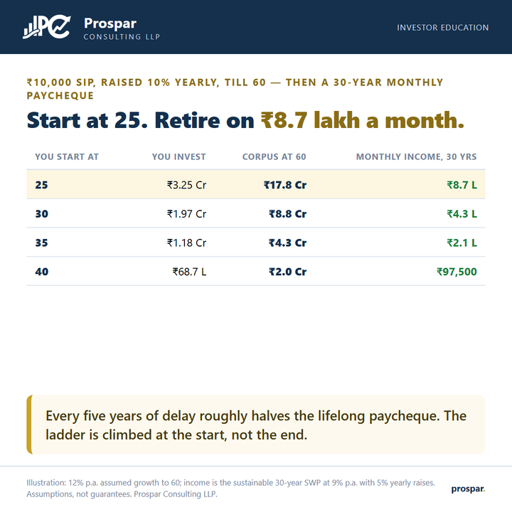

One SIP, a lifetime of paycheques.
Retirement planning sounds abstract until you phrase it as a salary. One disciplined SIP, started early enough, replaces the payslip your employer will one day stop sending.

The plan has two halves. Until 60, a ₹10,000 monthly SIP grows 10% a year alongside your increments, compounding at an assumed 12%. From 60, the corpus flips into a systematic withdrawal plan: a self-issued salary that rises 5% a year for thirty years while the remaining money keeps earning around 9%.
Started at 25, that single habit builds roughly ₹17.8 crore and pays about ₹8.7 lakh a month for three decades. Start at 30 and the paycheque is ₹4.3 lakh; at 35, ₹2.1 lakh; at 40, about ₹97,500. Nothing else in the plan changed, not the instalment, not the returns, not the discipline. Only the starting age moved, and each five-year delay cut the lifelong salary roughly in half.
Read the table backwards and it turns hopeful: whatever your age, the next five years are worth a doubling. The best start was at 25; the second-best start is this month.
See the corpus first, then test the paycheque it can sustain: preloaded with the age-30 row of the table.
{kind=link}
Illustration: 12% p.a. assumed growth to 60; income is the sustainable 30-year SWP at 9% p.a. with 5% yearly raises. Assumptions, not guarantees. For education only, not advice. Prospar Consulting LLP.